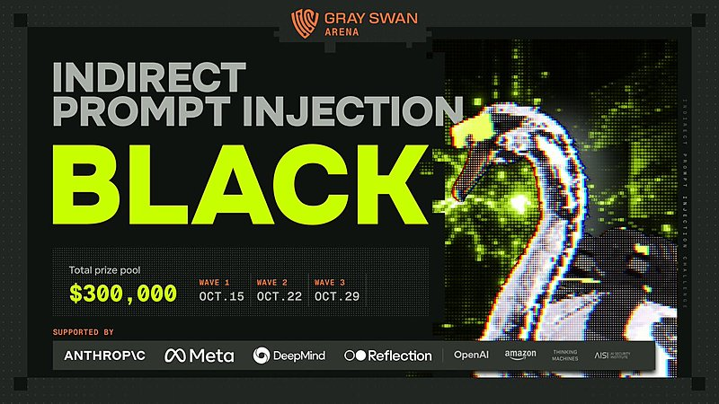
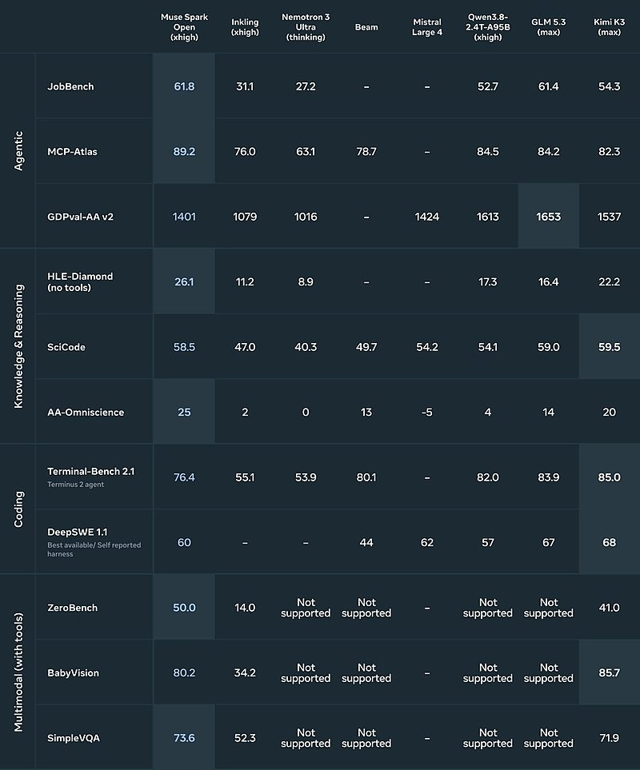
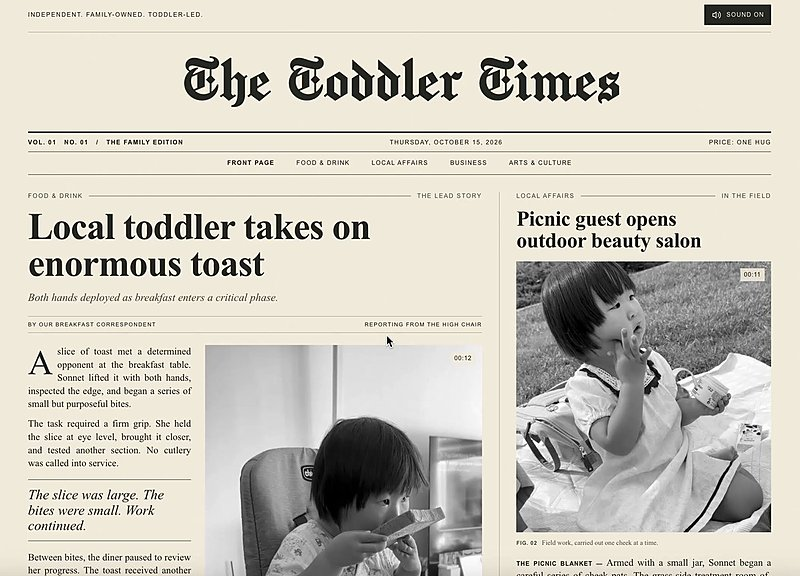

AI 日报 · 10月17日
当 Agent 开始承担更多工作
Meta 开放 Muse Spark Open 权重，Anthropic 公布内部 Agent 使用与岗位变化研究。新的模型供给让更多团队能够部署复杂工作流，也把可靠决策、提示注入防护和人工审核推到台前。
开放权重
Agent 工作
人工审核
可靠决策
5
Builder 动态
4
今日上榜项目
4
官方原始来源
1
公开视频
今日要点
Meta 开放 Muse Spark Open 权重
Meta 10 月 15 日发布 8160 亿总参数、420 亿激活参数的多模态开放权重模型，标称 100 万 token 上下文。官方称可通过两台 M5 Ultra Mac Studio 运行；这并不等于普通单机可轻松本地部署。权重采用附带商业条款的 Muse Model License。
Anthropic 公开自身工作结构变化
Anthropic 10 月 16 日研究称，技术部门初级员工占比自 2025 年初的 21% 降至 14%，初级技术岗位在新招人数中的占比由 27% 降至 9%。研究同时指出技术岗位招聘绝对人数仍在增加，不能据此直接推断整个行业的就业变化。
深度对话
Jev 创始人谈让软件直接使用 AI 判断
MAD Podcast 10 月 15 日访谈 TypeSafe CEO Diogo Almeida。以下是受访者对 Jev 设计的解释与主张，不应视作经独立验证的性能结论。
从文字回答改为可处理的判断
Almeida 解释，Jev 试图把输入转成概率式判断，例如一封邮件是否紧急、应否升级处理，让开发者在应用中设置阈值。
把复杂任务拆成可审核的小决定
访谈以邮件分类为例，主张先拆解决策，再根据误判代价调整阈值，而不是把整个流程交给一次长提示词。
别把访谈中的市场数字当独立审计
主持人与受访者讨论了融资、使用量和竞品；这些属于节目中的陈述，日报不把它们写作已核实的行业统计。
资讯精选
官方原文速览
Anthropic｜员工与公众的 AI 预期差距
其 2026 年 8 月调查显示，91% 的受访 Anthropic 员工与 39% 的美国成年人认为 AI 到 2030 年能做出诺奖级发现；这是受访者预测，不是能力测试结果。
Anthropic｜用 Claude 设计量子线路
团队给 Claude 八种线路的自然语言需求和自动评估器，报告称部分设计优于已发表方案。结果属于特定任务和评估设置，不能推出量子计算已具备通用实用能力。
Builder 动态
开放能力之后，如何保持控制
Boris Cherny｜继续压力测试提示注入
Anthropic 的 Claude 团队成员 Boris 称，随着 Agent 执行更多任务，跨行业解决提示注入问题愈发紧迫；他转发 Gray Swan 新一轮间接提示注入挑战。配图列出 30 万美元总奖金和三轮日期，属于主办方公告。

Aaron Levie｜企业会组合开放与托管模型
Box CEO Aaron Levie 认为，Meta 开放权重后，企业可用前沿模型处理编排和复杂任务，再对重复流程使用更便宜的定制模型；他预期整个技术栈的 token 工作量增加。这是其观点，尚非已证实的市场结果。

Zara Zhang｜把家庭照片做成会动的报纸
Zara 展示《The Toddler Times》网页，把家庭照片与仿报纸版式、动态画面结合。原帖视频展示的是单个作品，不代表通用生成工具已发布。

Nan Yu｜产品品味不止视觉审美
OpenAI 产品负责人 Nan Yu 在一则讨论中指出，把“品味”只理解为美学判断过于表面。这是对产品讨论的个人看法，并非一套已验证的设计方法。
Aditya Agarwal｜把可解释性当工程问题
SPC 合伙人 Aditya Agarwal 转发 Goodfire 的观点，认为可解释性和对齐可作为工程问题推进；具体研究结论仍需阅读 Goodfire 原始材料，不能仅凭转帖判断进展。
GitHub Trending
今日榜单的四个项目


按 10 月 17 日 GitHub Trending 实时榜单筛选；星标、分叉和语言取自本次 GitHub API 快照，后续会变化。避开昨日重点仓库；项目功能以仓库自述为准。
今日思考
开放权重扩大部署选择，决策模型试图给软件更明确的置信信息，提示注入挑战继续暴露执行风险。Anthropic 的内部研究把另一个成本写得具体：Agent 产出增多时，人类注意力会成为审核瓶颈。模型表现、组织变化和产品演示来自不同证据层级，不能把一家公司的内部观察直接推广到所有团队。今日一问：你的自动化流程中，哪些决定可以按阈值处理，哪些必须由人复核？
参考来源
Meta AI Research｜Muse Spark Open
Anthropic｜内部就业变化研究
Anthropic｜AI 预期差距调查
Anthropic｜量子线路研究
MAD Podcast｜Diogo Almeida 原频道视频
Matt Turck｜访谈发布帖
Boris Cherny｜提示注入挑战
Aaron Levie｜开放权重应用
Zara Zhang｜The Toddler Times
Nan Yu｜产品品味
Aditya Agarwal｜可解释性
GitHub｜10 月 17 日 Trending
K-Dense-AI/scientific-agent-skills
HKUDS/CLI-Anything
mksglu/context-mode
cursor/plugins